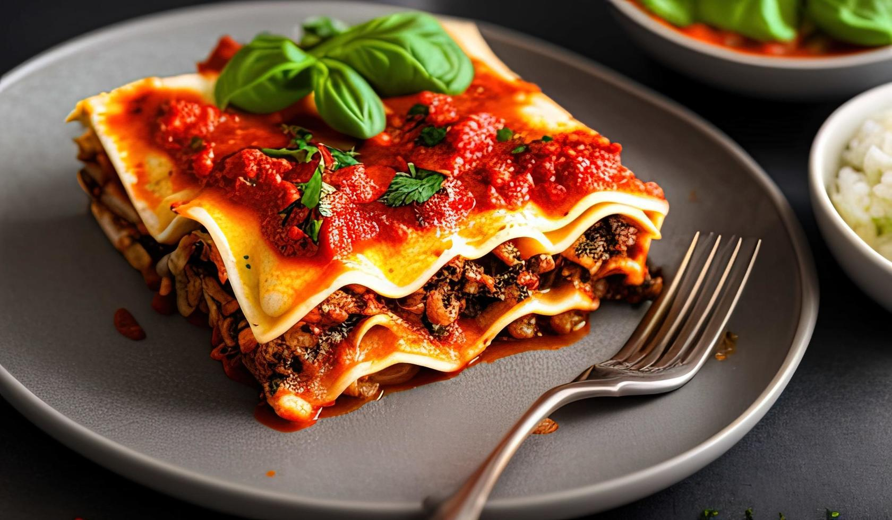

Lasagna is a classic Italian baked pasta dish made of layered sheets of pasta, rich meat sauce, and creamy cheese. It's a comforting, hearty meal loved worldwide for its combination of savory tomato sauce, melted cheese, and soft pasta layers baked to golden perfection.